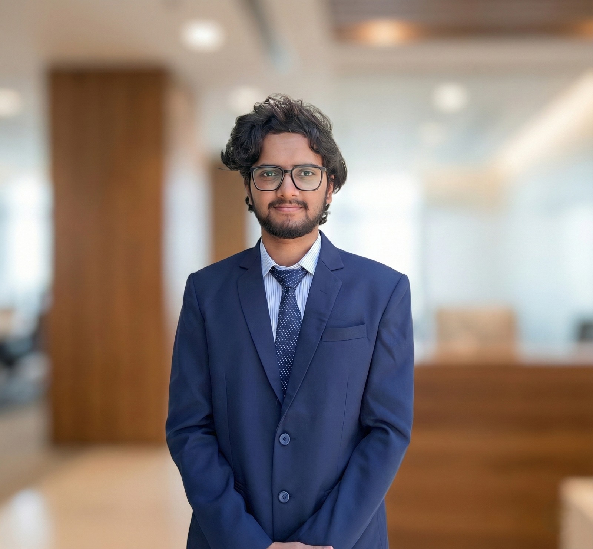

I build robots and robotic systems that move with purpose.
Hi, I’m Vinay Avinash Jadhav, a Robotics & Automation engineer focused on control systems, embedded hardware, mechanical design, and real-world automation.

I am a fourth-year Robotics and Automation Engineer who enjoys combining technical engineering with creative visualization. My work connects mechanical systems, control electronics, embedded programming, and 3D design.
I like building things that are practical, safe, and visually clear — from robotic manipulators to underwater automation systems. My strength is understanding both the engineering logic and the final user experience.
D.Y. Patil College of Engineering, Akurdi
2023 — 2027Bachelor of Engineering • Robotics & Automation
Current CGPA: 9.31 / 10R.S. Chandak High School & S.E.S Jr. College
2023Class 12th • MSBSHSE Board
Percentage: 75.33%Saint Thomas English Medium School
2021Class 10th • CISCE Board
Percentage: 93.20%ND Tools
Jan 2026 — Feb 2026Service Engineer Intern • Machinery Manufacturing
Worked on diagnostic analysis and calibration for high-precision CNC equipment including Widma Ecogrind LX5+ systems. Gained exposure to mechanical hardware, machine control, and closed-loop industrial automation.
- Analyzed NUM Flexium+ drives for 5-axis synchronous interpolation.
- Configured Renishaw 3D probes and feedback safety parameters.
- Observed filtration, coolant stability, and thermal management modules.
Professional Simulations
Forage EvaluationsJohnson & Johnson MedTech
Worked on control latency analysis for surgical robotic instrumentation using Python-based diagnostic workflows.
Siemens Mobility
Designed workflow layout improvements to reduce process latency in rail wheel manufacturing systems.
Teleoperated Underwater Welding System
Repository →Designed a remotely operated underwater welding concept to reduce human risk in deep marine infrastructure maintenance. The system includes automated electrode swapping and remote operation architecture.
5-DOF Robotic Manipulator
Repository →Built and coded a 5-axis robotic arm with base rotation, differential gripping, custom serial parsing, and PWM-based motor control logic on Arduino.
Mechanical & CAD
Fusion 360, SolidWorks, Assembly Design, GD&T, mechanical layouts.
Robotics & Controls
Python, ROS 2, Arduino, Gazebo, control systems, embedded integration.
Visualization
Blender 3D, technical animation, visual storytelling, design layouts.
Engineering Thinking
System optimization, problem solving, prototyping, technical communication.
Also served as Creative Head for the SARA Robotics Team, handling project branding, technical media, and design communication.